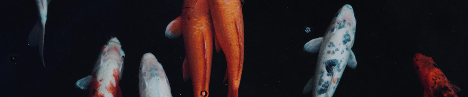
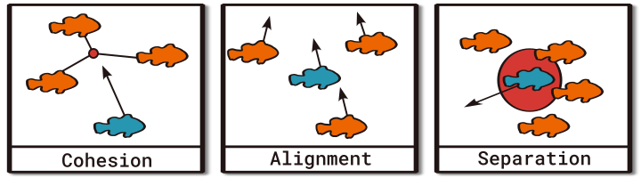
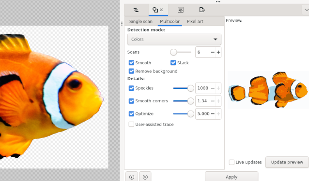
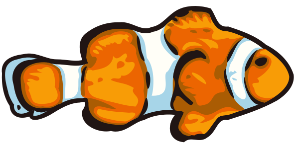

Introducing an aquatic simulation of Boids

Contents
While I was having a summer vacation, I wanted to do a short and simple weekend project trying to simulate a school of fish floating around on the screen. I also wanted to focus on making it look good and smooth, as a way for me to release some sort of artistic creativity during those sunny days.
So what's the simplest way to simulate life-like fish? With Boids of course.
Boids is an artificial life program, developed by Craig Reynolds in 1986, which simulates the flocking behaviour of birds.
Using the three simple rules that Mr. Reynolds defined initially, one is able to simulate the emergent flocking behaviour of animals. Never mind it was originally used to simulate flocks of birds, it looks equally great when applied to schools of fish.
Now then, the three rules are:

- Cohesion: A single Boid tries to move towards the center of a nearby group of other Boids.
- Alignment: And it should try to match it's velocity and direction with it's neighbours.
- Separation: While moving, it should also try to avoid collisions with the closest neighbours.
This results in the interesting behaviour of birds or fish, as mentioned before, that moves around in a big coordinated group which mimics real life pretty accurately. Complementary rules and steering behaviours allows one to limit the movement speed, bounding the whole flock to a position, following routes (or a leader) and more.
With this short introduction done, I'm documenting how I ended up with a two week long struggle with optimisations, poor programmer art and a rabbit hole down into shader magic. And it was only supposed to be a fun, quick thing for a day.
Skip down to Results for a sample clip of how it looks.
Optimisations
I've left out the code to keep this page shorter and instead recommend taking a look at the project repo.
My initial, naive code was actually able to render the simulation at sixty frames per second for about five hundred boids without much trouble. But I wanted to run much more boids at the same time, let's say about 10 000 boids for the hell of it. And the boids themselves have to run expensive distance calculations to keep them moving about in an orderly manner. These calculations were running for each single frame so that was going to be a huge performance drain of course.
Initial benchmark reported, for 500 boids:
cpu: Intel(R) Core(TM) i5-7200U CPU @ 2.50GHz
BenchmarkBoids-4 547 2604258 ns/op 0 B/op 0 allocs/opNot that great.
First round of optimisations was to start up a group of goroutines and let them handle updates for their own group of boids in parallel. And then only run the updates ten times per second. This resulted in a neat boost:
BenchmarkBoids-4 7471 860253 ns/op 2 B/op 0 allocs/opNext thing to do was dividing up the boids into smaller regions, using a simple form of a spatial index, so each boid didn't have to measure it's distance to all the other four hundred and ninety nine boids all the time.
My simple index is just a normal hash map that gets reconstructed on each update, where the values are arrays of integer IDs for the boids in the region. For the map keys I'm using a rounded off value of the coordinates from the boids:
floor( x / offset ), floor( y / offset )Where offset is the amount of pixels in a quadratic region
(currently it's set to 50 pixels, which divides the screen into 50×50 pixel
regions). Now each boid only have to check it's distance to the boids in current
region and the other eight regions surrounding it, which gave a smaller
boost:
BenchmarkBoids-4 9891 559058 ns/op 4295 B/op 6 allocs/opAfter this I wanted to replace my dumb index with a more efficient data structure1, like a k-d tree or locality-sensitive hashing2 but I think I was using them wrongly as the benchmark tanked. At this point I realised how low my CPU usage was while running the simulation and that I already could run 10 000 boids at the same time at a somewhat stable 60 FPS. Well, no further optimisations was actually needed so I dropped my buggy k-d tree and moved on.
Art
Happy with the results from a week of optimisations, I decided to instead focus on cleaning up the code and replace my shitty programmer art with something fancy.
I found a couple of pretty photographs of Koi and Clown fish on Unsplash that I could use as reference. Then I decided to do vector tracing in Inkscape, which has a great tool for automatic tracing of images, so I would get SVG art that can be exported to any other image format with high quality.

Then with the trace done there was a couple of hours of cleaning up the trace and making smaller adjustments until satisfaction (mostly fixing small details, overlaps and nudging things around). I was pretty happy with the result:

Then it's just a matter of exporting it as a small PNG and use it in the simulation. Done.
Shader
Next up was the background.
I wanted rays of light on the surface and a gradual shift down to deep darkness at the bottom. I was initially using a SVG colour gradient, easy but dirty, until I got the bright (heh) idea to use a shader.
Now I haven't mentioned yet what graphics framework I use for Go. It's Ebitengine. And it's got support for fragment
shaders, using it's own shader language called Kage. It looks much like
regular Go code and as a bonus, you can run gofmt on it to have it
formatted for you.
Using Kage I could render sun rays using a function from a shader script found on Shadertoy. Apply some light attenuation to the rays and a gradual smooth darkness over the whole screen and the shader is done:
// Sun rays initially sourced from: https://www.shadertoy.com/view/MdXGW7
func sunRay(coord, raySource, rayDirection vec2, seedA, seedB, speed float) vec4 {
sourceToCoord := coord - raySource
cosAngle := dot(normalize(sourceToCoord), rayDirection)
val := (0.45 + 0.15 * sin(cosAngle * seedA + Time * speed)) + (0.3 + 0.2 * cos(-cosAngle * seedB + Time * speed))
strength := (Resolution.x - length(sourceToCoord)) / Resolution.x
return vec4(1.0, 1.0, 1.0, 1.0) * clamp(val, 0.0, 1.0) * clamp(strength, 0.5, 1.0)
}
func Fragment(position vec4, texCoord vec2, color vec4) vec4 {
var fragColor vec4
// Render sunrays
fragColor += sunRay(
texCoord, vec2(Resolution.x*0.7, Resolution.y*-0.4), normalize(vec2(1.0, 0.2843)), 15.1869, 29.5428, 1.1,
) * 0.4
fragColor += sunRay(
texCoord, vec2(Resolution.x*0.8, Resolution.y*-0.6), normalize(vec2(1.0, -0.0596)), 21.4852, 17.9246, 1.5,
) * 0.5
// Emulate light attenuation for the rays
fragColor *= (1 - smoothstep(0, Resolution.y, texCoord.y)) * 0.7
// Apply smooth darkness towards the depths
fragColor += vec4(0, 0, 0, 1) * smoothstep(0, Resolution.y, texCoord.y)
return fragColor
}Results
When done with all that, here's a small sample of the end product from the optimisations, art and shader magic.
Interestingly, there was a recent HN thread around this time, about various data structures and spatial hashing was suggested. I also found an article about optimising boids.↩︎
LSH on wikipedia. I also found a easy to follow guide with simple code and a more theoretical one, but with great visuals.↩︎